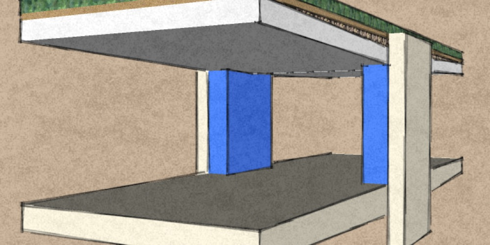
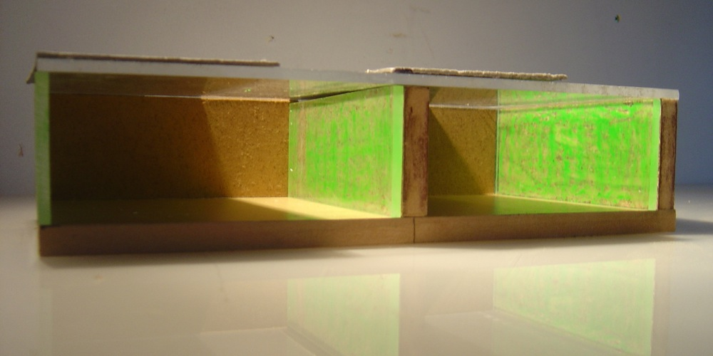
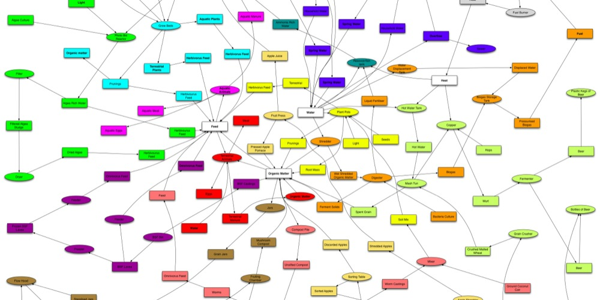
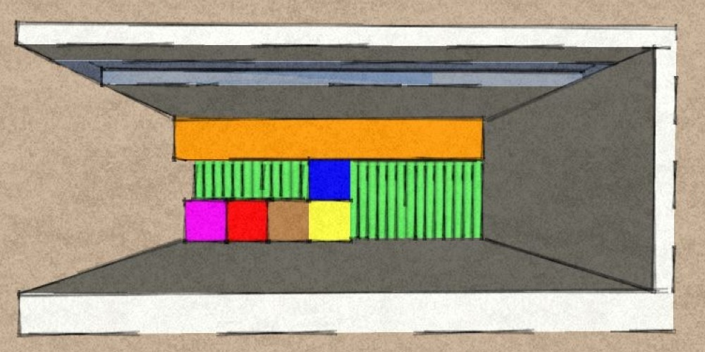
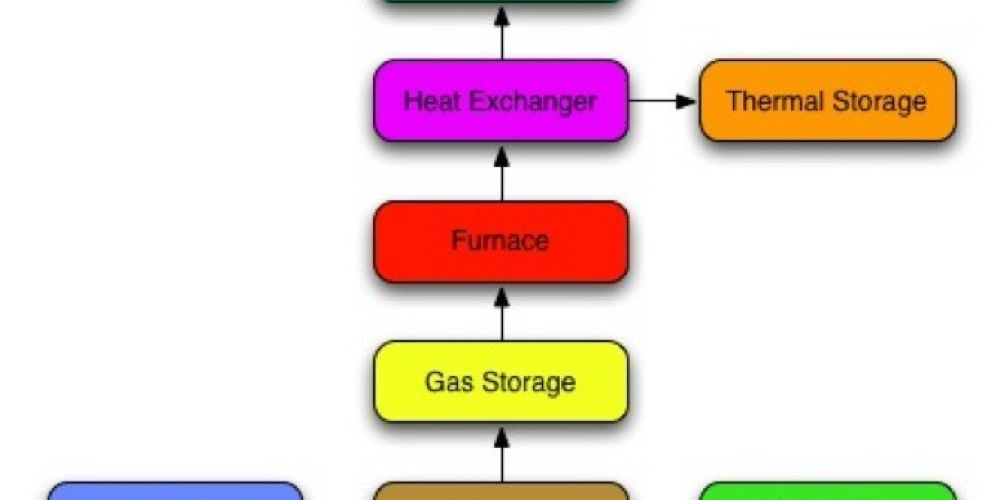
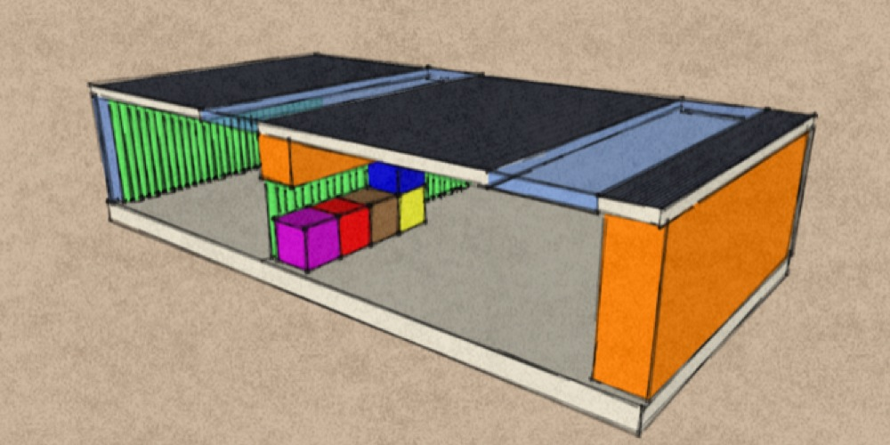
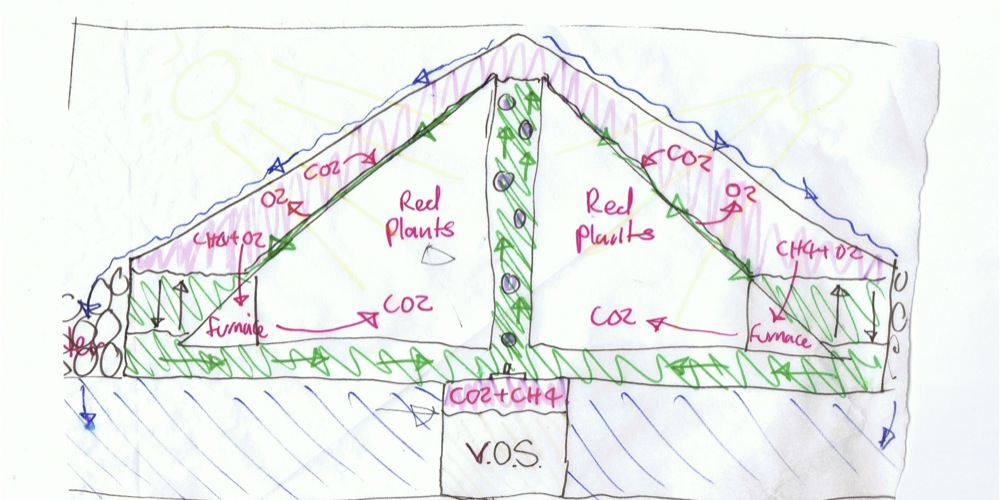

Autonomous Infrastructure
I suppose the goal of autonomous infrastructure as I term it is to attempt to conceive of a design, which would serve to encompass every functional need of the occupant.
I want to understand how building systems function and think about ways in which they could be re-designed or integrated in different ways to improve their efficiency. I want the form of the building to be an expression of the degree of elegance I achieve through creative organization of building systems.
I want them to be visible whenever possible, in expressing the character of the process they are apart of and being constructed of a material true to that character, and true to itself.
Out of the bewildering jumble of available building technologies I want to synthesize the minimum necessary in order to serve the design brief of each particular building. Boiled right down to bare essentials and arranged in a harmonious system each building would be totally unique and functional.
The first thing I did was to produce a large web diagram of all the ways I could think of in which different technologies could be integrated to serve the occupant, I’ll call this the web.
In order to give a physical 3d shape to these flows the physical size of the components of which they are composed must be calculated relative to one and other.
The components in each flow most often have unique scaling ratios as the way in which they are arranged effects their behavior. Due to this fact and the fact that we haven’t yet defined the exact 3d arrangement of components but only the conceptual flow, we cannot hope to possess such a terrible detailed knowledge of the relative components sizes. So we use rough rules of thumb.
So now we have these parts relatively scaled somewhere between 2d and 3d. We can begin to make 3d conceptual designs. We can play around with them aesthetically and ergonomically, then recirculate the feedback loop for a more detailed analytical prediction of their behavior, or just go straight into working models to ascertain the efficiency of their functionality and experiment with suitable materials for their structural and aesthetic properties.
